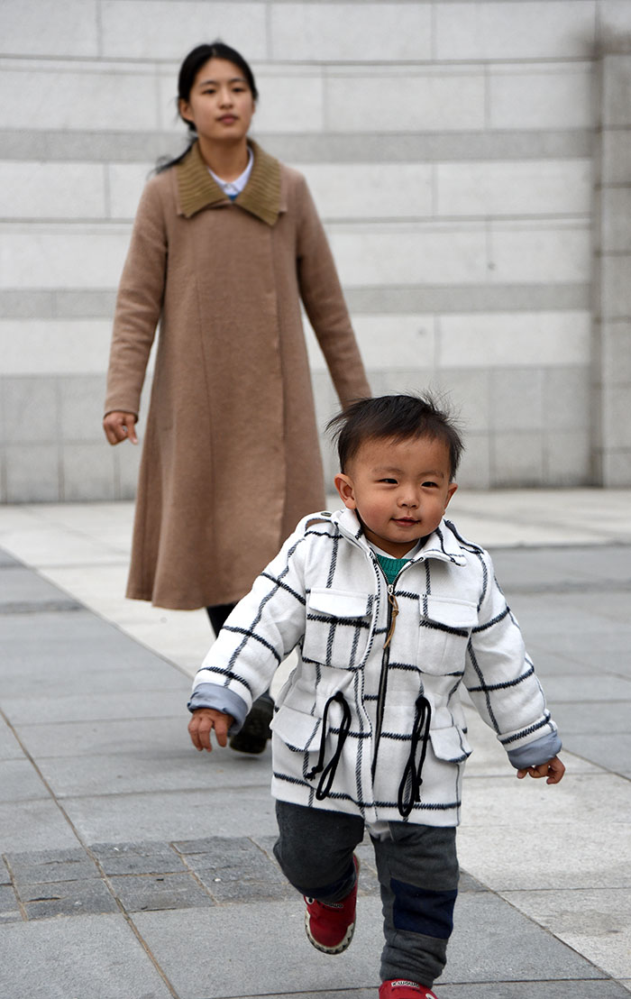

老杨急就章系列（15）
满目苍夷白驹去，重整河山为少年
by 长沙杨飞
2016是我发微博最少的一年，一百来条吧。如果要简单形容2016年我微博账号的情况，最恰当的一个词应该是“百孔千疮”。今年发的这一百多条微博，其阅读的连续性很差。被屏蔽（设为不宜公开）、被禁转（禁止转发）以及内容被删（转发但原微博消失）的比比皆是，如果还加上直接蒸发（彻底被删）的，今年我微博的三分之一强都被一只神秘的大手处理过。白驹过隙，满目苍夷。
但我还算幸运的，至少账号还在。我关注的朋友两百来人，今天翻了翻，有不少账号都已经消失了，原因不明。现在自媒体写作圈子里流行一句话：憋住长文保平安。今年很多时候我三五天都懒得动一下微博，发了也没用，它们一会就能神秘消失。这是一种可怕的情况。我感觉自己生活在恐怖之中。
虽然今年发微博最少，我也从不做营销，但粉丝却在稳步增加，从一万三增加到一万六。新粉丝主要是被两篇文章吸引来的，一篇是老杨谈海口暴打妇孺事件，这篇文章在微信朋友圈阅读量快速达到十万加，然后快速消失。另外一篇是为什么我们不能访问谷歌，在多方围堵之下，此文依然达到了近百万阅读量。这是我写作二十年来的单篇最高纪录。
多方围堵并没有夸张。此文我通过几个不同的网站连接到微信朋友圈，无一例外被404。尤其值得一提的是，谷歌一文发表以来，我的个人网站杨飞摄影（服务器在英国）两次遭到黑客DDOS攻击，累计瘫痪时间超过十天。自我的网站2001年上线以来，这是十多年来的第一次。我的服务器服务商对我提出了警告，并对黑客进行了跟踪分析。黑客来自哪里，诸位应该可以猜到。
谷歌这篇文章不消说在微博上是发不出去的。有很多朋友转发过，基本都是一转没。转发的朋友里面也有官方人士，比如北京市政协常委、中国农工民主党北京市常委王茁先生，他截图发了谷歌一文的部分内容，三天被转发两万次，然后就没有然后了。这并不奇怪，我今年转发过联合国官方微博的文章，回头一看也没了。还好，联合国的官方微博还在。
今年的六月，我做了一个静脉曲张小手术。虽然是小手术但也需要全身麻醉。我还有很多创作计划没有完成，所以我有点害怕全麻，万一把脑子弄坏了就坏事了。在进手术室之前，我用手机写下了两段话：
“最近很多朋友都劝我别谈政治，写点艺术和风月就好。我其实很反感政客，政治都是肮脏的。但是，并不是我要关心政治，而是政治在关心我。我查资料用不了谷歌，看视频用不了youtube，和国外亲人联系用不了facebook，我写的文章很多也莫名其妙地消失了。我感觉自己生活在一个很恶劣和压抑的空气里，它使得我没有心情去谈风月和艺术。
有的朋友错误地认为只要不谈政治自己就安全了。请想一想，有毒的雾霾、有毒的食品、看不起的病、住不起的房，哪一样和政治没有关系？只要你还活着，政治就会每天关心你，即便你不想关心它。
我的儿子刚出世不久，我希望他长大以后能生活在自由的空气里。不要像我们现在一样。但是，好的环境并不会从天上掉下来，它需要大家共同努力。所以，我将继续写作，直到有一天我能自由地写作。”
这是我的梦想，自由地生活，自由地写作。人生在世，最重要的不过两样东西，一是生命，二是自由。命都没了则一切无意义。活着，但是被关在笼子里，那感觉生不如死。我们要最大限度地争取自由，包括说话的自由。现在这种文章不停地无故消失的情况一定要改变，这不是正常的人类社会应该具有的特征。
今年我写字不多。如果要说今年最大的成就，那应该是我儿子的茁壮成长。两年前的今天，他还在妈妈的肚子里，只有几百克；去年的今天，他还只能抱在手里；今年的今天，他已经是一个满地飞奔重达25斤的小帅哥了。
这个小帅哥是我人生最大的成就之一。一想到这个小胖子，我走在路上都能暗自笑出声来。我希望他不光是身体健康，更重要的是心灵健康。我希望他长大之后能在干净的空气里呼吸，能在自由的空气里说话，永远免除被消失的恐惧。我将为此而努力奋斗。
感谢读者诸君的一贯支持。祝大家2017新年快乐。
杨飞，
2016/12/31，长沙

奔跑的帅哥
关注老杨作品：
1，杨飞摄影 www.midphoto.com
2，微信：yangfei789288
3，微信公众号：长沙杨飞
4，新浪微博@长沙杨飞
5，推特Twitter@feiyang17
6，Facebook：yangfei999999@hotmail.com